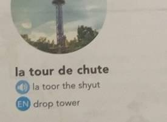
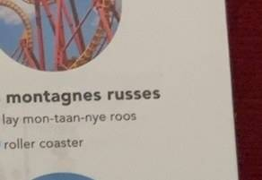
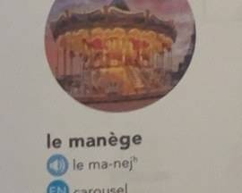
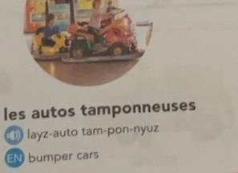
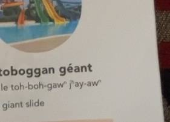
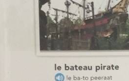
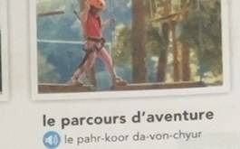
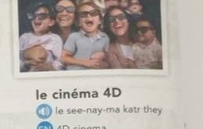
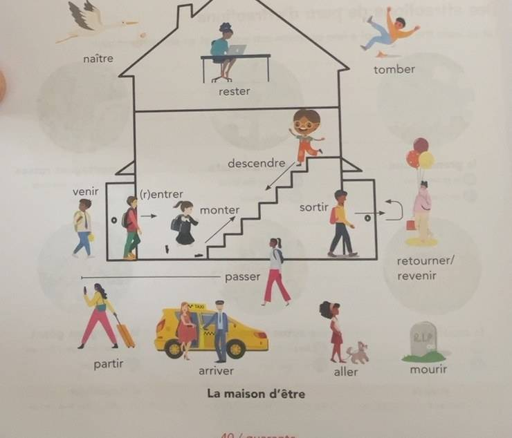

START HERE / THE BIG IDEA
Ek din park mein, poori kahani past meinA day at the park, told in the pastUne journée au parc, racontée au passé
Socho tum doston ke saath amusement park gaye. Tumne giant wheel dekha, roller coaster try kiya, pizza khaya aur souvenirs khareede. Ghar aakar tum ye sab past tense mein bataoge.
Chapter ka main idea hai: attractions ke French naam yaad rakho, aur passé composé se past ki baat likhna seekho—kabhi être ke saath, kabhi avoir ke saath.
Imagine you went to an amusement park with friends. You saw the Ferris wheel, tried the roller coaster, ate pizza, and bought souvenirs. Later, you tell all this in the past tense.
The main idea is to remember the French names of attractions and use the passé composé to write about the past—sometimes with être, sometimes with avoir.
Imagine que tu vas au parc d’attractions avec tes amis. Tu vois la grande roue, tu essaies les montagnes russes, tu manges une pizza et tu achètes des souvenirs. Après, tu racontes tout au passé.
L’idée principale est de retenir les noms des attractions et d’utiliser le passé composé—parfois avec être, parfois avec avoir.
Attraction ka naam yaad rakho, aur past ki baat passé composé mein likho.
Remember each attraction and write past events in the passé composé.
Retiens les attractions et raconte le passé au passé composé.
French to writeHier, je suis allé au parc d’attractions avec mes amis. Nous nous sommes bien amusés.
01 / ATTRACTION TOUR
Nau attractions, nau French naamNine attractions, nine French namesNeuf attractions et leurs noms
Har attraction ka French naam padho aur ek short French sentence yaad rakho. Isse picture dekhkar naam likhna aur short answers easy ho jayenge.
Read each attraction’s French name and remember one short French sentence about it. This makes picture-based answers and short answers easier.
Lis le nom français de chaque attraction et retiens une phrase courte. Cela t’aidera pour les images et les réponses courtes.
la grande roue
Giant wheel / bada jhoola jo dheere-dheere ghoomta hai aur upar se poora park dikhta hai.
The Ferris wheel: a big wheel that turns slowly and shows the whole park from the top.
French to writeLa grande roue tourne lentement dans le ciel. On voit tout le parc.
la tour de chute
Drop tower / uncha tower jahan se neeche bahut tez giraya jaata hai.
The drop tower: a tall tower ride that drops down very fast.
French to writeLa tour de chute monte haut, puis descend très vite.
les montagnes russes
Roller coaster / tez rail gaadi jo upar-neeche aur gol-gol ghoomti hai.
The roller coaster: a fast rail ride that goes up, down, and around.
French to writeLes montagnes russes vont très vite. Nous avons crié pendant la course.
le manège
Carousel / gol-gol ghoomne wala jhoola, aksar ghodo wali seats ke saath.
The carousel: a round ride that turns, often with horse seats.
French to writeLe manège tourne avec des chevaux et de la musique.
les autos tamponneuses
Bumper cars / chhoti cars jo ek-doosre se takrati hain.
Bumper cars: small cars that gently bump into each other.
French to writeLes autos tamponneuses se cognent et nous rions beaucoup.
le toboggan géant
Giant slide / bahut lambi slide jisse neeche phisalte hain.
The giant slide: a very long slide to slide down.
French to writeLe toboggan géant est long et rapide.
le bateau pirate
Pirate ship / naav jaisa jhoola jo aage-peeche jhoolta hai.
The pirate ship: a boat-shaped swing that moves back and forth.
French to writeLe bateau pirate balance d’un côté à l’autre.
le parcours d’aventure
Adventure course / rassi-pul aur games wala rasta.
The adventure course: a path with ropes, bridges, and games.
French to writeLe parcours d’aventure est un chemin avec des jeux.
le cinéma 4D
4D cinema / aisi movie jisme seat hilti hai aur effects feel hote hain.
4D cinema: a film where the seat moves and you feel effects.
French to writeLe cinéma 4D bouge avec le film. C’est drôle et effrayant.









02 / VOCABULAIRE
Chapter ke useful wordsUseful words from the chapterLes mots importants du chapitre
French word ko pehchaano, phir meaning padho. Spelling aur accents (é, è, ê) exam mein dhyan se likho.
Recognise the French word, then read its meaning. Write the spelling and accents (é, è, ê) carefully in the exam.
Lis le mot français et son sens. Écris bien les accents, comme é, è et ê.
Les attractions / Attractions
| French | Meaning |
|---|---|
| une journée au parc d’attractions | amusement park mein ek dina day at the amusement park |
| la grande roue | giant wheel / bada ghoomne wala jhoolaFerris wheel |
| la tour de chute | drop tower / tez neeche girne wala jhooladrop tower |
| les montagnes russes | roller coaster / tez rail gaadiroller coaster |
| le manège | carousel / gol ghoomne wala jhoolacarousel; merry-go-round |
| les autos tamponneuses | bumper cars / takrane wali chhoti carsbumper cars |
| le toboggan géant | giant slide / badi slidegiant slide |
| le bateau pirate | pirate ship ride / naav wala jhoolapirate ship ride |
| le parcours d’aventure | adventure course / khelon wala rastaadventure course |
| le cinéma 4D | 4D cinema / effects wali movie4D cinema |
| les nacelles | jhule ki tokri-seats / cabinsgondolas; ride cabins |
| la course | ride ka chakkar / daudthe ride; run |
L’histoire / Story words
| French | Meaning |
|---|---|
| d’abord | pehle / sabse pehlefirst; at first |
| après cela / ensuite | uske baad / phirafter that; then |
| après avoir mangé | khana khane ke baadafter eating |
| finalement | aakhir mein / ant meinfinally |
| en même temps | ek hi samay parat the same time |
| tout au long de | poore dauran / shuru se ant takthroughout |
| s’amuser | maza karna / enjoy karnato have fun |
| amusés | khush / maza kiya huaamused; had fun |
| crier / crier | chillanato scream; to shout |
| rire / ri | hansna / hansato laugh; laughed |
| effrayant | daraawnascary; frightening |
| drôle | mazedaar / funnyfunny |
| sentis / se sentir | mehsoos kiya / feel kiyafelt; to feel |
| arrêtés / s’arrêter | ruke / ruknastopped; to stop |
| un stand de nourriture | khane ka stallfood stand |
| la boutique de souvenirs | yaadgaar tohfon ki dukaansouvenir shop |
| inoubliable | na bhoolne wali / yaadgaarunforgettable |
| fatigués mais heureux | thake hue lekin khushtired but happy |
03 / PASSÉ COMPOSÉ AVEC ÊTRE
Past tense être wali verbs ke saathPast tense with être verbsLe passé composé avec être
Passé composé mein past ki baat helper verb + past participle se banti hai. Aane-jaane aur movement wali 17 verbs être leti hain. Inhe La maison d’être picture se yaad rakho.
In the passé composé, the past is formed with a helper verb + past participle. Seventeen movement verbs use être. Remember them with the La maison d’être picture.
Au passé composé, on utilise un auxiliaire + le participe passé. Dix-sept verbes de mouvement prennent être. On les retient avec la maison d’être.
French to writeHier, je suis allé au parc. Elle est arrivée à l’heure. Nous sommes restés toute la journée.
Subject + être (present) + past participle. Jaise: je suis allé = main gaya.
Subject + être (present) + past participle. Example: je suis allé = I went.
Sujet + être au présent + participe passé. Exemple : je suis allé.
| Infinitif | Participe passé | Meaning |
|---|---|---|
| devenir — devenu | devenu | banna / becometo become |
| revenir — revenu | revenu | wapas aana / come backto come back |
| monter — monté | monté | upar chadhna / climbto go up; climb |
| rester — resté | resté | rehna / stayto stay |
| sortir — sorti | sorti | bahar jaana / go outto go out |
| venir — venu | venu | aana / cometo come |
| aller — allé | allé | jaana / goto go |
| naître — né | né | paida hona / be bornto be born |
| descendre — descendu | descendu | neeche utarna / go downto go down |
| entrer — entré | entré | andar aana / enterto enter |
| rentrer — rentré | rentré | wapas andar aana / come back into return; come back |
| tomber — tombé | tombé | girna / fallto fall |
| retourner — retourné | retourné | wapas jaana / returnto return |
| arriver — arrivé | arrivé | pahunchna / arriveto arrive |
| mourir — mort | mort | marna / dieto die |
| partir — parti | parti | rawana hona / leaveto leave |
| passer — passé | passé | guzarna (bina object ke) / pass byto pass (without object) |
Être wali verbs mein participle subject se match karta hai: ladki ke liye +e, plural ke liye +s, ladkiyan plural ho to +es. Jaise: elle est allée, ils sont allés, elles sont allées.
With être verbs, the participle agrees with the subject: add +e for feminine, +s for plural, and +es for feminine plural. Example: elle est allée, ils sont allés, elles sont allées.
Avec être, le participe s’accorde : +e au féminin, +s au pluriel, +es au féminin pluriel : elle est allée, ils sont allés, elles sont allées.
French to writeElle est allée au parc. Ils sont arrivés en retard. Elles sont restées avec leurs amis.

Aller: affirmative, negative, question
| Type | Example | Meaning |
|---|---|---|
| Affirmatif | Je suis allé(e). / Nous sommes allé(e)s. | Main gaya/gayi. / Hum gaye.I went. / We went. |
| Négatif | Je ne suis pas allé(e). / Nous ne sommes pas allé(e)s. | Main nahi gaya/gayi. / Hum nahi gaye.I did not go. / We did not go. |
| Interrogatif | Suis-je allé(e) ? / Es-tu allé(e) ? / Est-il allé ? | Kya main gaya? / Kya tum gaye? / Kya woh gaya?Did I go? / Did you go? / Did he go? |
04 / SPECIAL VERBS COMPARISON
Pronominal aur transitive/intransitive verbsPronominal and transitive/intransitive verbsVerbes pronominaux, transitifs et intransitifs
Do aur past patterns samjho. Pronominal verbs (se lever, s’amuser, s’arrêter) hamesha être lete hain. Transitive ka matlab object ke saath (avoir), intransitive ka matlab bina object ke (être).
Learn two more past patterns. Pronominal verbs (se lever, s’amuser, s’arrêter) always use être. Transitive means with a direct object (avoir); intransitive means without an object (être).
Les verbes pronominaux (se lever, s’amuser, s’arrêter) prennent toujours être. Un verbe transitif a un objet direct (avoir) ; un verbe intransitif n’a pas d’objet (être).
Verbes pronominaux / Pronominal verbs
Formula: subject + me/te/se/nous/vous/se + être + participle. Jaise nahane-uthne wali daily actions.
Pattern: subject + me/te/se/nous/vous/se + être + participle, often for daily or fun actions.
Structure : sujet + me/te/se/nous/vous/se + être + participe.
| French | Meaning |
|---|---|
| je me suis levé(e) | main utha/uthiI got up |
| tu t’es amusé(e) | tumne maza kiyayou had fun |
| il / elle s’est arrêté(e) | woh ruka/rukihe/she stopped |
| nous nous sommes amusés | humne maza kiyawe had fun |
| je ne me suis pas levé(e) | main nahi utha/uthiI did not get up |
French to writeNous nous sommes amusés au parc. Je me suis arrêté à un stand de nourriture.
Transitif (avoir) vs intransitif (être)
Simple trick: sentence mein kya/kisko ka jawab ho to object hai → avoir. Object na ho to → être.
Simple trick: if the sentence answers what/whom, there is an object → use avoir. With no object → use être.
S’il y a un objet direct, on utilise avoir. S’il n’y a pas d’objet, on utilise être.
| Verb | Sans objet → être | Avec objet → avoir |
|---|---|---|
| descendre | Le singe est descendu de l’arbre. Bandar ped se utra.The monkey came down from the tree. |
Il a descendu les escaliers. Usne seedhiyan utari (neeche le gaya).He went down the stairs. |
| monter | Je suis monté sur la colline. Main pahadi par chadha.I climbed up the hill. |
Elle a monté les valises. Usne suitcase upar pahunchaye.She took the suitcases up. |
| sortir | Il est sorti pour jouer. Woh khelne bahar gaya.He went out to play. |
Il a sorti son chien. Usne apne dog ko bahar nikala.He took his dog out. |
| passer | Ils sont passés par ma maison. Ve mere ghar ke paas se guzre.They passed by my house. |
Ils ont passé une belle journée à la plage. Unhone beach par achha din bitaya.They spent a nice day at the beach. |
| rentrer | Je suis rentré tard hier soir. Main kal raat der se ghar aaya.I came home late last night. |
J’ai rentré les chaises. Maine kursiyan andar rakhi.I brought the chairs inside. |
| retourner | Nous sommes retournés chez nous. Hum school ke baad ghar wapas gaye.We went back home. |
J’ai retourné le livre à mon ami. Maine kitab dost ko wapas ki.I returned the book to my friend. |
Yaad rakhne ka shortcut: Object dikhe → avoir. Object na dikhe aur movement ho → être.
Memory shortcut: See an object → avoir. Movement with no object → être.
Pour retenir : objet direct → avoir ; mouvement sans objet → être.
05 / FRENCH SENTENCE BUILDER
Past mein 2-line answer banaoBuild a two-line past answerConstruire une réponse au passé
Exam mein 2 chhote past sentences kaafi hain: pehle kahan gaye, phir kya kiya.
Two short past sentences are enough in the exam: first where you went, then what you did.
Deux phrases courtes suffisent : d’abord où tu es allé, puis ce que tu as fait.
Hier, je suis allé(e) + [lieu]. J’ai + [participe] + [chose].
Hier, je suis allé au parc. J’ai mangé une pizza.
Nous sommes montés dans la grande roue. Nous nous sommes amusés.
Hier ka matlab “kal” hai. Je suis allé ladke ke liye, je suis allée ladki ke liye likho.
Hier means “yesterday”. Write je suis allé for a boy and je suis allée for a girl.
Hier veut dire le jour passé. On écrit je suis allé au masculin et je suis allée au féminin.
Matlab: Kal main park gaya. Maine pizza khaya. Hum giant wheel mein baithe. Humne maza kiya.
That means: Yesterday I went to the park. I ate a pizza. We rode the Ferris wheel. We had fun.
nous nous sommes amusés ka matlab “humne maza kiya” hota hai—ye exam mein bahut kaam aata hai.
nous nous sommes amusés means “we had fun”—very useful in the exam.
06 / WRITE IT IN FRENCH
Paper mein French answer kaise likheinHow to write a French exam answerÉcrire une réponse en français
Answer ko 2–3 chhote past sentences mein banao: pehle jagah, phir action, phir feeling. Neeche French model hai—pehle meaning samjho, phir French sentence yaad karke likhne ki practice karo.
Build an answer with two or three short past sentences: place first, then action, then feeling. Read the meaning, then practise writing the French model from memory.
Écris deux ou trois phrases courtes : le lieu, l’action, puis le sentiment. Lis le sens, puis entraîne-toi à écrire la réponse en français.
Où sont allés les amis ? Les amis sont allés au parc d’attractions. D’abord, ils ont trouvé la grande roue. Ils sont montés dans les nacelles.
Dost amusement park gaye. Pehle unhe giant wheel mila. Ve cabins mein baithe.
The friends went to the amusement park. First they found the Ferris wheel. They got into the cabins.
Qu’ont-ils mangé ? Ils se sont arrêtés à un stand de nourriture. Ils ont mangé de la pizza et des hamburgers. C’était délicieux.
Ve food stall par ruke. Unhone pizza aur hamburgers khaye. Bahut tasty tha.
They stopped at a food stand. They ate pizza and hamburgers. It was delicious.
Comment s’est passée la journée ? Nous avons essayé les montagnes russes et le manège de la maison hantée. Finalement, nous avons acheté des cadeaux. Nous étions fatigués mais heureux.
Humne roller coaster aur haunted-house ride try ki. Ant mein humne gifts khareede. Hum thake the lekin khush the.
We tried the roller coaster and the haunted-house ride. Finally we bought gifts. We were tired but happy.
Connectors: d’abord = pehlefirst; ensuite = phirthen; finalement = ant meinfinally.
Try it: write two sentences about the souvenir shop / Souvenir shop par French mein likho
Finalement, nous avons visité la boutique de souvenirs. J’ai acheté des cadeaux pour ma famille.
Ant mein hum souvenir shop gaye. Maine family ke liye gifts khareede.
Finally we visited the souvenir shop. I bought gifts for my family.
07 / PRACTICE & CHECK
Pehle khud try karo, phir check karoTry first. Check after.Essaie d’abord, puis vérifie
Answers dekhne se pehle questions khud solve karo. Past verb ya attraction ka clue dhoondo.
Try the questions yourself before opening the answers. Look for a clue about a past verb or an attraction.
Réponds aux questions avant d’ouvrir les réponses. Cherche un indice sur un verbe au passé ou une attraction.
- Où ?
- Kahan?Where?
- Quand ?
- Kab?When?
- Quelle attraction ?
- Kaunsi ride?Which ride?
- Qu’ont-ils mangé ?
- Unhone kya khaya?What did they eat?
- Comment ?
- Kaise?How?
- Avec qui ?
- Kiske saath?With whom?
- Qu’est-ce que… ?
- Kya…?What…?
- Est-ce que… ?
- Kya…? (question banane wala)Is it that…? (question marker)
- Vrai ou faux ?
- Sach ya jhooth?True or false?
- Choisissez
- Sahi jawab chunoChoose
- Complétez
- Khali jagah bharoComplete / fill in
- Conjuguez
- Verb ka sahi form likhoConjugate the verb
- Transformez en négatif
- Negative mein badlo (ne…pas)Change into negative (ne…pas)
- Posez une question
- Sawal banaoAsk a question
A. Vrai ou faux? / True or false?
- Les amis sont allés au parc d’attractions pour s’amuser.
- La première attraction était le cinéma 4D.
- Ils ont mangé de la pizza et des hamburgers.
- Le manège de la maison hantée était effrayant et drôle.
- Les amis n’ont pas acheté de souvenirs pour leurs familles.
- Après la journée, ils étaient fatigués mais heureux.
Check answers / Jawab dekho
V, F, V, V, F, V. Yaad rakho: pehle la grande roue mili thi; khana pizza et hamburgers tha; ant mein souvenirs khareede the.
True, False, True, True, False, True. Remember: they first found la grande roue; they ate pizza et hamburgers; finally they bought souvenirs.
B. Choisissez la bonne réponse / Choose the right answer
- Quelle attraction les amis ont-ils trouvée en premier ?
- Les montagnes russes
- La grande roue
- Le manège de la maison hantée
- Qu’ont-ils mangé au parc ?
- Des hot-dogs et des frites
- De la pizza et des hamburgers
- Des sandwiches et des chips
- Comment se sont-ils sentis après les montagnes russes ?
- Excités, ils ont crié
- Fatigués, ils ont dormi
- Perdus, ils ont cherché
Check answers / Jawab dekho
1-B la grande roue, 2-B pizza et hamburgers, 3-A excités, ils ont crié.
1-B la grande roue, 2-B pizza et hamburgers, 3-A excités, ils ont crié.
C. Complétez au passé composé / Fill in the past
- Nous ________ à la plage hier. (aller)
- Ils ________ une belle soirée. (passer)
- Elles ________ chez leur grand-mère. (rester)
- Tu ________ en retard à ton rendez-vous. (arriver)
- Il ________ très malade la semaine dernière. (être)
- Le chat ________ sur le canapé toute la journée. (dormir)
- Les enfants ________ beaucoup de cadeaux à Noël. (recevoir)
- Vous ________ une grande randonnée. (faire)
Check answers / Jawab dekho
- Nous sommes allés à la plage hier.
Hum kal beach gaye. - Ils ont passé une belle soirée.
Unhone achhi shaam bitayi. - Elles sont restées chez leur grand-mère.
Ve apni nani ke ghar ruki. - Tu es arrivé en retard à ton rendez-vous.
Tum meeting mein late pahunche. - Il a été très malade la semaine dernière.
Woh pichhle hafte bahut beemar tha. - Le chat a dormi sur le canapé toute la journée.
Billi din bhar sofa par soyi. - Les enfants ont reçu beaucoup de cadeaux à Noël.
Bachchon ko Christmas par bahut gifts mile. - Vous avez fait une grande randonnée.
Aapne lambi sair ki.
- Nous sommes allés à la plage hier.
We went to the beach yesterday. - Ils ont passé une belle soirée.
They spent a nice evening. - Elles sont restées chez leur grand-mère.
They stayed at their grandmother’s house. - Tu es arrivé en retard à ton rendez-vous.
You arrived late to your appointment. - Il a été très malade la semaine dernière.
He was very sick last week. - Le chat a dormi sur le canapé toute la journée.
The cat slept on the sofa all day. - Les enfants ont reçu beaucoup de cadeaux à Noël.
The children received many gifts at Christmas. - Vous avez fait une grande randonnée.
You went on a long hike.
D. Transformez en négatif / Make negative
- Je suis allé au parc.
- Nous sommes partis en vacances.
- Tu as pris le train.
- Ils ont mangé une pizza.
- Elles sont parties ensemble.
Check answers / Jawab dekho
- Je ne suis pas allé au parc.
Main park nahi gaya. - Nous ne sommes pas partis en vacances.
Hum chhuttiyon par nahi gaye. - Tu n’as pas pris le train.
Tumne train nahi liya. - Ils n’ont pas mangé de pizza.
Unhone pizza nahi khaya. - Elles ne sont pas parties ensemble.
Ve saath mein nahi gayi.
- Je ne suis pas allé au parc.
I did not go to the park. - Nous ne sommes pas partis en vacances.
We did not leave for vacation. - Tu n’as pas pris le train.
You did not take the train. - Ils n’ont pas mangé de pizza.
They did not eat pizza. - Elles ne sont pas parties ensemble.
They did not leave together.
E. Poore French sentence mein jawab doAnswer in a full French sentence
- Où sont allés les amis pour s’amuser ?
- Quelle est la première attraction qu’ils ont trouvée ?
- Qu’ont-ils mangé pendant la journée ?
- Quand est-ce que tu es arrivé ?
- Avec qui sont-elles parties en vacances ?
See sample answers / Example dekho
- Les amis sont allés au parc d’attractions pour s’amuser.
Dost maza karne park gaye. - Ils ont d’abord trouvé la grande roue.
Unhone pehle giant wheel dekha. - Ils ont mangé de la pizza et des hamburgers.
Unhone pizza aur hamburgers khaye. - Je suis arrivé à l’heure.
Main time par pahuncha. - Elles sont parties en train avec leurs amis.
Ve doston ke saath train se gayi.
- Les amis sont allés au parc d’attractions pour s’amuser.
The friends went to the amusement park to have fun. - Ils ont d’abord trouvé la grande roue.
They first found the Ferris wheel. - Ils ont mangé de la pizza et des hamburgers.
They ate pizza and hamburgers. - Je suis arrivé à l’heure.
I arrived on time. - Elles sont parties en train avec leurs amis.
They left by train with their friends.
F. Posez une question / Ask the question
Jawab padho aur us par French mein sawal banao.
Read each answer and make its French question.
Lis chaque réponse et pose la question en français.
- Tu es arrivé à l’heure. → ________ ?
- Elle est née en France. → ________ ?
- Les enfants sont allés à la piscine. → ________ ?
- J’ai mangé une pizza. → ________ ?
Check answers / Jawab dekho
- Quand est-ce que tu es arrivé ?
Tum kab pahunche? - Où est-elle née ?
Woh kahan paida hui? - Où sont allés les enfants ?
Bachche kahan gaye? - Qu’est-ce que tu as mangé ?
Tumne kya khaya?
- Quand est-ce que tu es arrivé ?
When did you arrive? - Où est-elle née ?
Where was she born? - Où sont allés les enfants ?
Where did the children go? - Qu’est-ce que tu as mangé ?
What did you eat?
G. Formez des phrases / Make sentences
Words ko jodkar passé composé mein poora French sentence banao.
Join the words into a full French sentence in the passé composé.
Forme une phrase complète au passé composé avec ces mots.
- J’ / naître / dans une petite ville
- Ils / arriver / à l’aéroport / en retard
- Elle / descendre / du train / à la gare
- Nous / partir / en vacances / en juillet
Check answers / Jawab dekho
- Je suis né(e) dans une petite ville.
Main chhote shehar mein paida hua/hui. - Ils sont arrivés à l’aéroport en retard.
Ve airport late pahunche. - Elle est descendue du train à la gare.
Woh station par train se utri. - Nous sommes partis en vacances en juillet.
Hum July mein chhuttiyon par gaye.
- Je suis né(e) dans une petite ville.
I was born in a small town. - Ils sont arrivés à l’aéroport en retard.
They arrived at the airport late. - Elle est descendue du train à la gare.
She got off the train at the station. - Nous sommes partis en vacances en juillet.
We left for vacation in July.
SPEAK / WRITE
Apni park wali kahani bataoTell your park storyRaconte ta journée au parc
Dost ko apne din ke baare mein batao: kahan gaye, kaunsi ride li, kya khaya, kaisa laga. Phir neeche starters se French mein bolo aur likho.
Tell a friend about your day: where you went, which ride you tried, what you ate, and how you felt. Then say and write it in French with the starters below.
Raconte ta journée : où tu es allé, quelle attraction tu as essayée, ce que tu as mangé et ce que tu as ressenti.
- Je suis allé au parc avec mes amis. — Main doston ke saath park gaya.I went to the park with my friends.
- J’ai essayé les montagnes russes. — Maine roller coaster try kiya.I tried the roller coaster.
- Nous nous sommes bien amusés. — Humne bahut maza kiya.We had a lot of fun.
Hier, je suis allé au parc avec ma famille. J’ai mangé une glace. Je me suis bien amusé.
Kal main family ke saath park gaya. Maine ice cream khayi. Maine bahut maza kiya.
Yesterday I went to the park with my family. I ate an ice cream. I had a lot of fun.
Personal questions: Es-tu allé au cinéma ce week-end ? As-tu visité un château ? In sawalon ka jawab hamesha poore French sentence mein do, jaise Oui, je suis allé au cinéma. Non, je ne suis pas allé.
Personal questions: Es-tu allé au cinéma ce week-end ? As-tu visité un château ? Always answer in a full French sentence, such as Oui, je suis allé au cinéma. Non, je ne suis pas allé.
Questions personnelles : Es-tu allé au cinéma ce week-end ? As-tu visité un château ? Réponds toujours par une phrase complète.
QUICK REVISION
In clues ko yaad rakhoRemember these cluesRetiens ces indices
- la grande roue
- Giant wheel; elle tourne lentement.Giant wheel; elle tourne lentement.
- les montagnes russes
- Roller coaster; elles vont très vite.Roller coaster; elles vont très vite.
- le manège hanté
- Haunted ride; c’était effrayant et drôle.Haunted ride; c’était effrayant et drôle.
- DR MRS VANDERTRAMP
- 17 être verbs; je suis allé, elle est arrivée.17 être verbs; je suis allé, elle est arrivée.
- Agreement
- Feminine +e, plural +s, feminine plural +es.Feminine +e, plural +s, feminine plural +es.
- Pronominal
- nous nous sommes amusés = humne maza kiya.nous nous sommes amusés = we had fun.
- Avoir / Être
- Object ho to avoir; bina object movement ho to être.Object → avoir; movement without object → être.
- d’abord → finalement
- Story order: d’abord, ensuite, finalement.Story order: d’abord, ensuite, finalement.